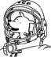

\1\2ğaç\3
Uzaydaki ilk hayvan hangisidir?

Meyve sineği.
1946 Temmuz’unda küçücük astronotlar bir miktar tahıl tohumuyla birlikte Amerikan V2 roketine bindirilip uzaya fırlatıldılar. Yüksek irtifada patlamanın radyasyon üzerine etkisini test etmeye alışkındılar.
Meyve sinekleri laboratuvarlar için idealdir. Bilinen insan hastalıkları genlerinin dörtte üçünün genetik kod karşılığı meyve sineklerinde bulunur. Onlar da geceleri uyur, narkoza benzer bir tepki verir ve en güzeli de çok çabuk ürerler. 15 günde yepyeni bir jenerasyon oluşturabilirsiniz.
Uzay, “100 km yükseklikten sonra başlar” diye tarif edilir. Uzaya meyve sineğinden sonra ilk olarak yosun ve sonra da maymun gönderildi.
Uzaydaki ilk maymun 1949’da 134 km yüksekliğe ulaşan Albert II idi. Onun selefi Albert I bir yıl önce 100 km sınırına ulaşamadan boğularak can verdi. Maalesef Albert II de iniş sırasında roket kapsülündeki paraşütün açılmaması nedeniyle öldü.
Uzaydan bir maymunun sağlam dönebilmesi 1951’i buldu, Albert VI ona eşlik eden 11 fareyle birlikte dönmeyi başardı (gerçi o da dönüşünden iki saat sonra öldü).
Genelde öncü uzay maymunları pek uzun ömürlü olmaz, fakat 1959’daki görevinden sonra 25 yıl yaşamış olan sincabımsı maymun Baker gurur verici bir istisnadır.
Uzay hiç de uzak değildir: Arabanız dümdüz yukarı gidebiliyor olsa sadece bir saatlik yol.
FRED HOYLE
Ruslar köpekleri tercih etmiştir. Rusların yörüngeye gönderdiği ilk hayvan Sputnik 2’deki Laika’dır (1957), Laika uçuş sırasındaki sıcaklık stresinden dolayı öldü. Uzaya 1961’de çıkan ilk insan Yuri Gagarin’den önce en az on köpek daha gönderilmişti. Bu köpeklerden altısı yaşamlarına devam etti.
Ruslar 1968’de uzayın derinliklerine de hayvan gönderdi. Bu hayvan bir Horsefield kaplumbağasıydı ve ayın yörüngesindeki ilk canlı varlık (aynı zamanda dünyanın en hızlı kaplumbağası) oldu.
Uzaya gönderilmiş olan diğer hayvanlar arasında şempanzeler (hiçbiri ölmemiştir), hintdomuzu, kurbağa, fare, kedi, eşekarısı, böcek, örümcek ve çok dayanıklı bir balık olan mummi-chog var. Japonların uzaya gönderdiği hayvanlar ise 1985’te yolladıkları on tane semenderdir.
2003’teki Kolombiya uzay mekiği faciasından sağ kurtulan tek canlı, enkaz altında bulunan mekiğin laboratuvarından çıkan nematod kurtlarıdır.